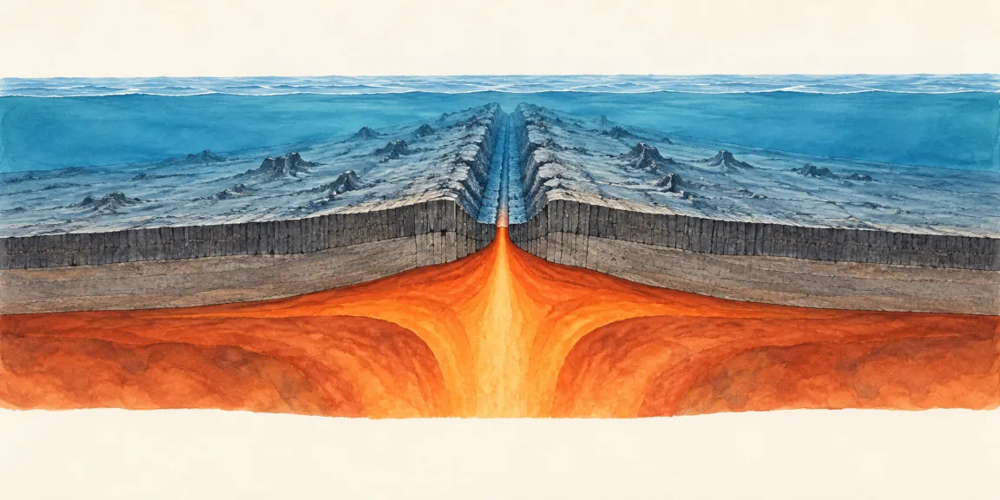
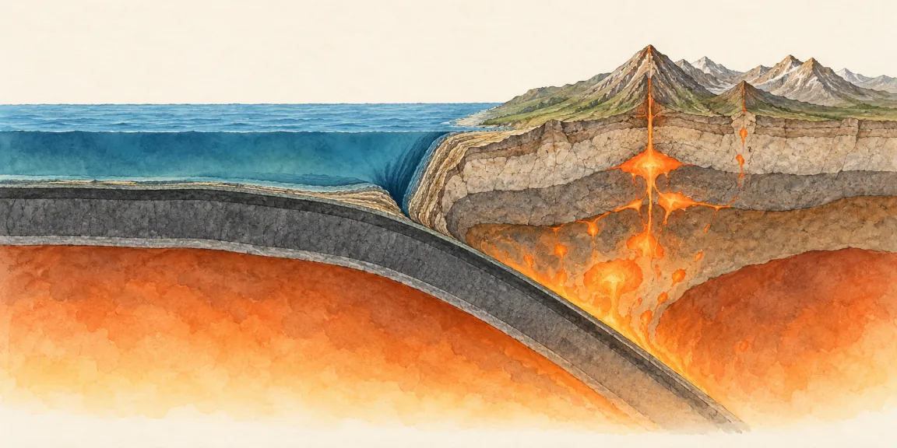
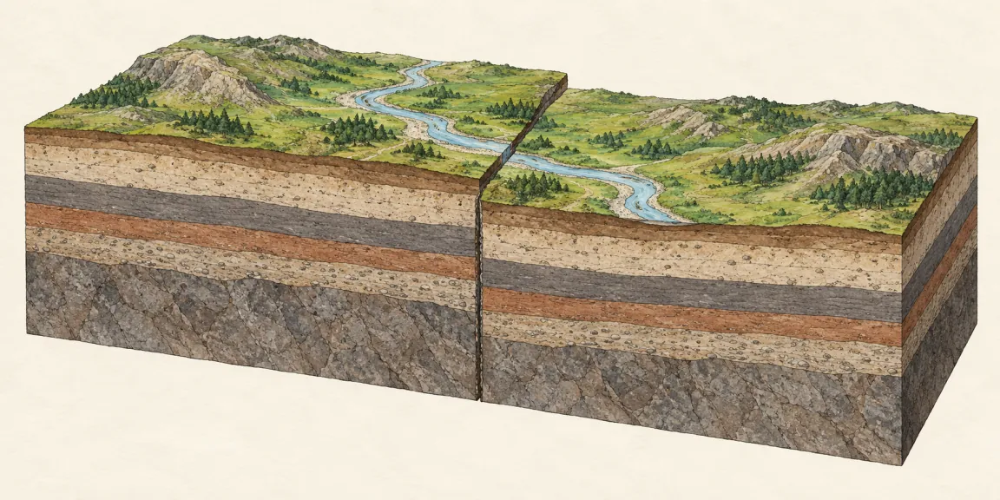
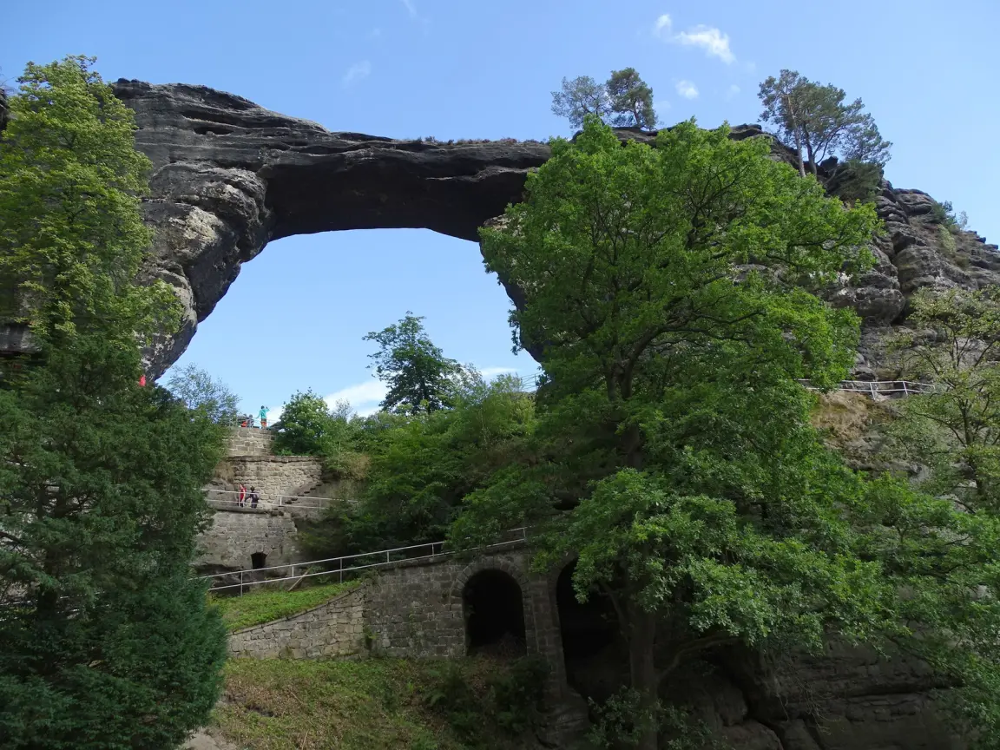
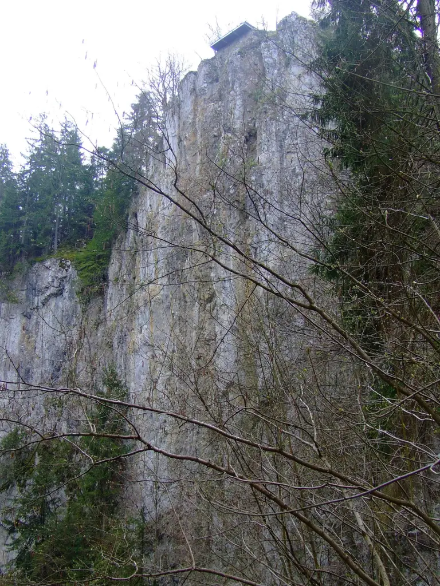
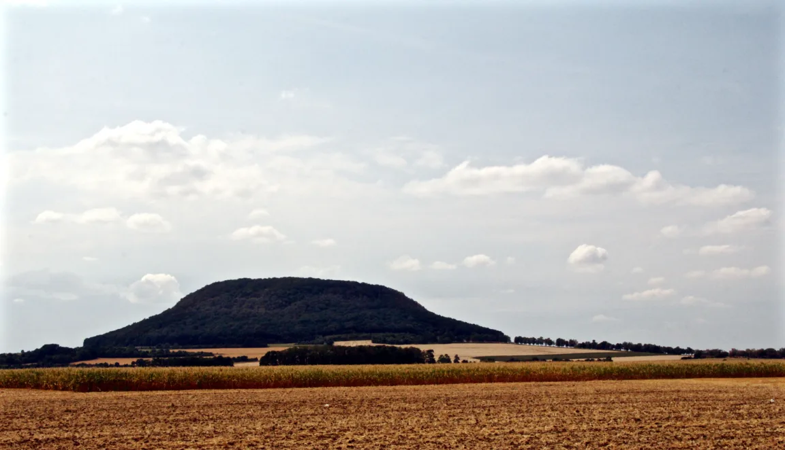
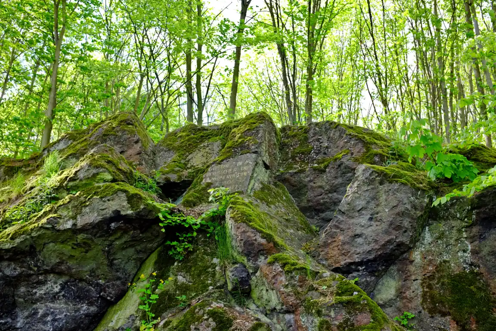
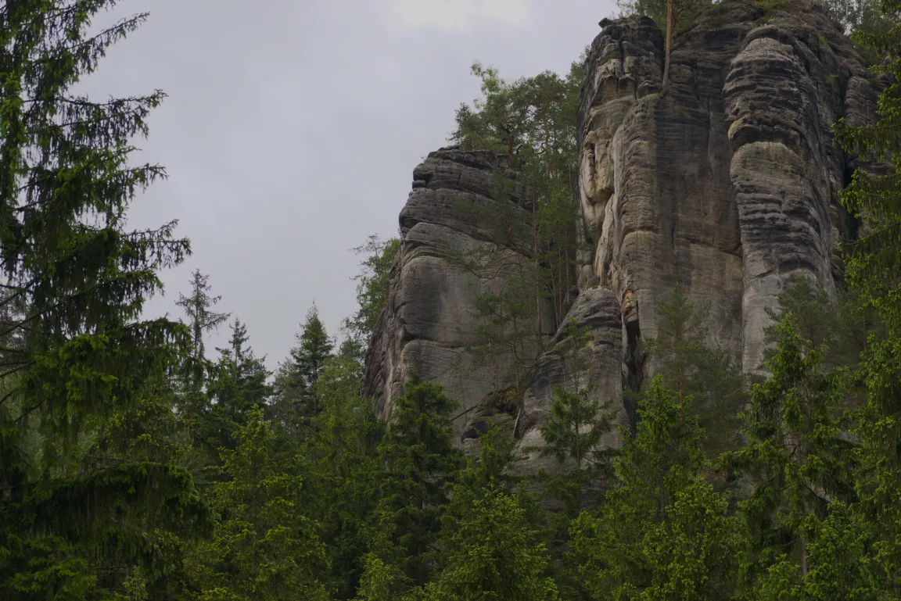
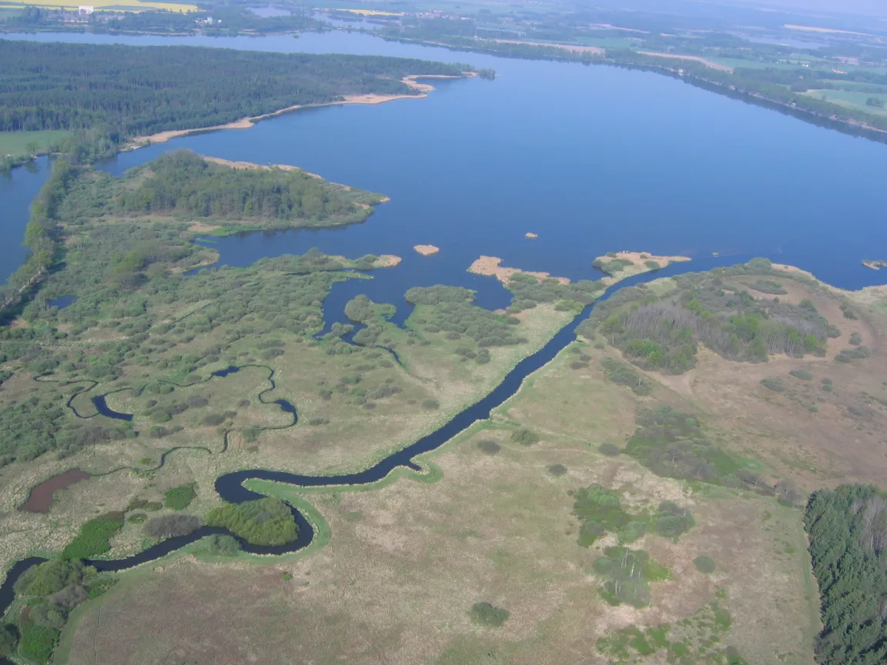

Litosférické desky
Litosféra (kůra + nejsvrchnější pevná část pláště) je rozlámaná na desky, které se pohybují po plastické astenosféře. Pohání je proudění hmoty v plášti.
Pro 9. ročník: pohyb litosférických desek, sopky, zemětřesení a zvětrávání.
Povrch Země se neustále mění, jen většinou velmi pomalu. Působí na něj dvě skupiny dějů. Vnitřní děje pohání teplo z nitra Země: zvedají pohoří, tvoří sopky a způsobují zemětřesení. Vnější děje pohání Slunce, voda, vítr, led a organismy: povrch rozrušují a obrušují.
Litosféra (kůra + nejsvrchnější pevná část pláště) je rozlámaná na desky, které se pohybují po plastické astenosféře. Pohání je proudění hmoty v plášti.
Rozbíhavé – desky se vzdalují, vzniká nová oceánská kůra (oceánské hřbety). Sbíhavé – srážka, subdukce, pohoří, sopky, zemětřesení. Transformní – posun podél zlomu.
Náhlé uvolnění napětí v horninách podél zlomu. Ohnisko je v hloubce, epicentrum na povrchu přímo nad ním. Otřesy zaznamenává seismograf.
Zvětrávání horninu rozruší na místě (mráz, voda, teplota, organismy), eroze zvětralý materiál odnáší a jinde se usazuje.
Typická chyba: plést si zvětrávání a erozi. Zvětrávání horninu rozpadá, eroze ji odnáší – skalní města v Českém ráji vznikla spoluprací obou. V Česku nejsou činné sopky ani silná zemětřesení, protože ležíme daleko od okrajů desek; Říp a České středohoří jsou pozůstatky dávných sopek.
Hustší oceánská deska se podsouvá pod pevninskou desku. Jak se tento jev jmenuje, o jaké rozhraní jde a co na něm vzniká?
Subdukce na sbíhavém rozhraní: vzniká příkop, zemětřesení a pás sopek; jde o vnitřní geologické děje. Takto je lemován například ohnivý kruh okolo Tichého oceánu.









Litosféra – zemská kůra spolu s nejsvrchnější pevnou částí pláště – je rozlámaná na litosférické desky, které se pohybují po plastické astenosféře (části svrchního pláště). Na jejich okrajích vznikají sopky, zemětřesení a pohoří. Vnější děje naopak povrch obrušují – zvětráváním a erozí.